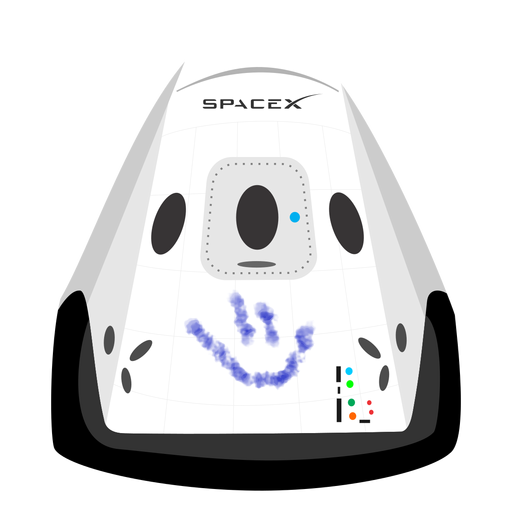

hyperblog tu blog de cabecera
aquí inicia la historia de un gran proyecto
Y este es el párrafo de inicio donde vamos a explicar las cosas increíbles que se pueden hacer con ramas

Los blogs son la mejor forma de compartir información y tus ideas. Mucho más que ir a conferencias o salir en YouTube. Excepto si eres un rockstar. Pero estadísticamente no lo eres.... por ahora.
suscribete y dale like